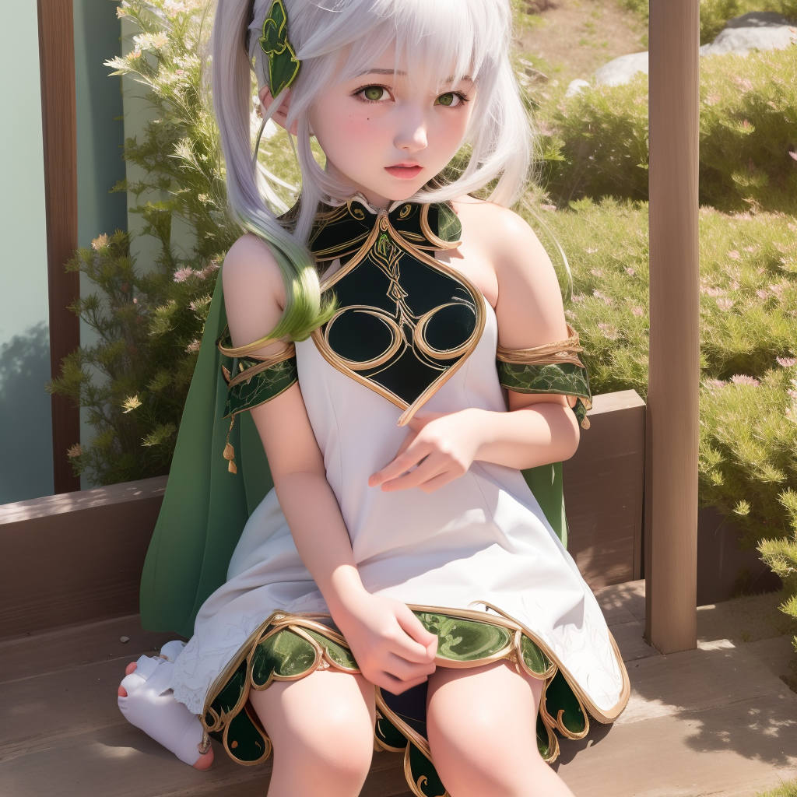

Artikel
Artikel seputar waifu dengan gambar buatan AI

Makima
Karakter dari anime Chainsaw Man, merupakan sosok Control Devil yang mampu mengendalikan pikiran manusia ataupun devil lainnya.

Nahida
Karakter dari game Genshin Impact, merupakan seorang archon dendro yang memimpin region Sumeru. Tubuhnya yang seperti anak-anak disebabkan oleh bencana di masa lalu.

Keqing
Karakter dari game Genshin Impcat, merupakan salah satu dari 7 pemimpin bisnis besar (Qixing) di region Liyue dengan gelar Yuheng.
Artikel Terkait
Artikel seputar website
- Belajar HTML
- Belajar CSS
- Belajar JavaScript
- Belajar PHP
- Belajar MySQL